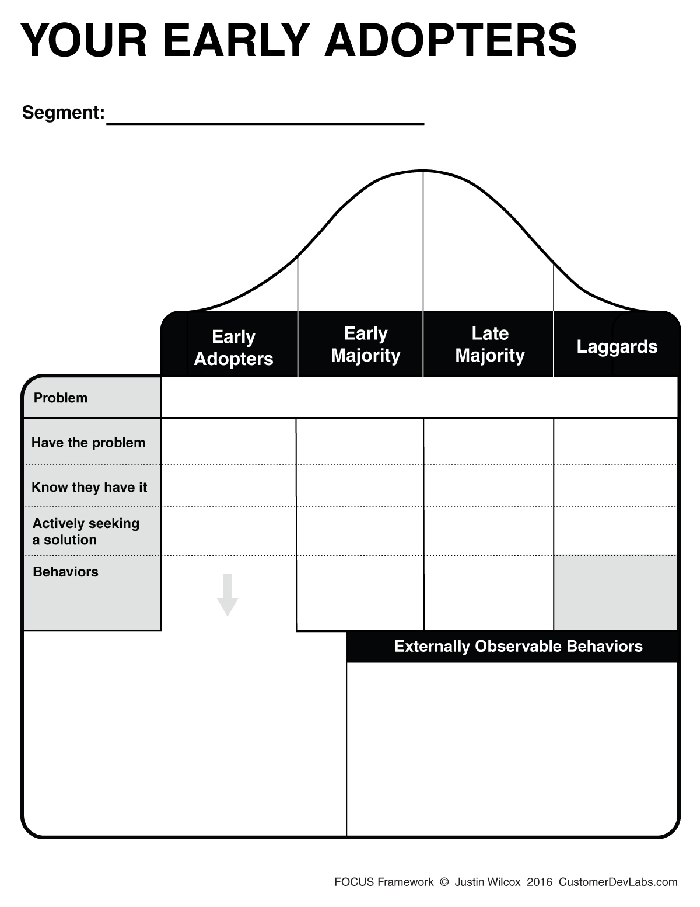

Questions: Ask and up vote.
Welcome to How to Find Product-Market Fit!
You can take notes during the workshop here.5 Phases of Product-Market Fit
- F
- O
- C
- U
- S
Takeaways
- Declaring Victory: What's your Victory?
- Product-Market Fit Assessment:
- Phase are you in:
- Riskiest Assumption:
- Next step:
Where are your Early Adopters:

Defining Product-Market Fit
Ready to define Product-Market Fit?
Declaring Victory Worksheet
This worksheet will walk you through defining Product-Market Fit.
Today's Date
Start by writing in today's date in the field on the right.
What's your Product?
Write in the product or service that you would like to build.
Who's your Customer?
Write in the customers or people whom you would like to serve.
Fold on the Dotted Line
Click next to fold the worksheet on the dotted line over and Declare your Victory!
Your Promise
Now that your worksheet is folded, you've revealed a new contract with yourself:
- Even if you never get to build your product and
- Even if you are not able to help the people you want to help...
You are still going to achieve victory.
Enter your Victory
Write in your measurable Victory metric.
Find your FOCUS
Want Feedback?
Type "Yes" if you'd like me to review your Victory.
Bonus: you'll also be helping others learn.
What Emotions are you Seeking?
Now that you know what your true victory will be, write in how you imagine it will feel to achieve.
Make it Official
Congratulations! You have your victory.
What are your Co-Founders' Victories?
Ask your co-founder(s) to complete the exercise too - either now, or when they join your team.
Find your FOCUS
Congratulations, you've taken the most important step of your startup journey, you've Declared Victory and in doing so, defined your Product-Market Fit.
Write your Victory Declaration in your Notes tab!

Your customer segment
Your customer's problem (in their words)
1.
2.
3.
4.
5.
2.
3.
4.
5.
1.
2.
3.
4.
5.
2.
3.
4.
5.
Product-Market Fit Assessment
This exercise will tell you:- What phase of Product-Market Fit you're in
- Your startup's "Riskiest Assumption"
- Your next step to test that assumption
Just answer these questions...
Have you launched your product?
|
Are customers paying for it?
|
Are enough customers paying for it that, if you keep doing what you're doing, you'll achieve Product-Market Fit?
|
|
Congrats! You're on the path to Product-Market
Fit.
Keep doing what you're doing!
|
Why aren't you on track to acheive Product-Market Fit?
Not sure? Go with your gut. Eventually you'll test both.
|
Why don't you have enough customers?
Not sure? Starting at the top, pick the first answer you think could be the reason.
|
Where are you looking for customers?
|
|
Your Riskiest Assumption is: You know where
your customers look for solutions to their problems.
Product-Market Fit Phase: Finding Early Adopters for
your product.
Your Your Next Step: Interview customers to validate
where they look for solutions.

Recommended FOCUS Exercise...Description: Understand who your Early Adopters
are, and where to find them, by contrasting their behavior with your Early Majority,
Late Majority, etc. Use this information to make your interviews easier and faster
to get.
Found in FOCUS Workbook 1... |
|
Your Riskiest Assumption: Your marketing
channels can reach a sufficient number of customers for you to achieve Product-Market Fit.
Product-Market Fit Phase: Offer Testing - You can
Reach your Early Adopters.
Your Next Step: Test alternative channels to determine
potential customer segment size.

Recommended FOCUS Exercise...Description: This spreadsheet will show you if your
segment is large enough for you to achieve Product-Market Fit based on real-world, bottoms-up,
data.
You'll also be able to estimate the size of your marketing channels, conversion rates,
and price points to determine the best approach for you to achieve Product-Market Fit.
Found in FOCUS Workbook 2... |
What emotions are you evoking in your Call to Action?
|
|
Your Riskiest Assumption: You understand
what your customers are trying to accomplish in their roles.
Product-Market Fit Phase: Finding Early Adopters for
your product.
Your Next Step: Interview your customers to understand
what problems they are actively trying to solve.

Recommended FOCUS Exercise...Description: This exercise will help you brainstorm
specific groups of customers you can serve by focusing on their problems.
Everything is easier when you center your attention on your customer's problems:
asking for interviews, marketing, sales, product development, etc. Take this step now,
and you'll move much faster through the rest of your journey.
Found in FOCUS Workbook 1... |
|
Your Riskiest Assumption: You understand
your customer's emotional desires.
Product-Market Fit Phase: .
Your Next Step: Interview your customers to understand
their emotional desires.
Recommended FOCUS Exercise...Description: Understand who your Early Adopters
are, and where to find them, by contrasting their behavior with your Early Majority,
Late Majority, etc. Use this information to make your interviews easier and faster
to get.
Found in FOCUS Workbook 1... |
|
Your Riskiest Assumption: Your marketing
copy reasonates emotionally with your customers.
Product-Market Fit Phase: Offer Testing - You can
Reach your Early Adopters.
Your Next Step: Test multiple versions of your marketing
copy/Call to Action.

Recommended FOCUS Exercise...Description: This exercise will help you identify
the emotions your customers' emotions.
By identifying and addressing your customers' emotional needs, you'll significantly
increase your conversion rate.
Found in FOCUS Workbook 2... |
|
Your Riskiest Assumption: There are large
enough customer segments for you to achieve Product-Market Fit.
Product-Market Fit Phase: Scaling to Product-Market
Fit.
Your Next Step: Identify, size and test related customer
segments.

Recommended FOCUS Exercise...Description: This exercise will show you how to
transition from your Early Adopters to your Early Majority segment.
By acquiring secondary and tertiary segments you'll be able to accelerate your path
to Product-Market Fit.
Found in FOCUS Workbook 5... |
|
Your Riskiest Assumption: Your solution
is solving your customer's problem well enough, and they are incentivized enough, to share
your product with others.
Product-Market Fit Phase: Utility Testing - You can
Satisfy your Early Adopters.
Your Next Step: Increase your Viral Coefficent (i.e.
K Factor).

Recommended FOCUS Exercise...Description: This exercise will help you brainstorm
and prioritize ways to increase the virality of your product.
Found in FOCUS Workbook 4... |
Why is your Customer Lifetime Value too low?
Not sure? Starting at the top, pick the first answer you think could be the reason.
|
|
Your Riskiest Assumption: Your solution
is solving your customer's problem well enough that they'll continue paying for it.
Product-Market Fit Phase: Utility Testing - You can
Satisfy your Early Adopters.
Your Next Step: Test ways to increase the value your
solution is providing to customers.

Recommended FOCUS Exercise...Description: This exercise will provide four different
techniques to increase your Customer Lifetime Value making it more likely you'll achieve
Product-Market Fit..
Found in FOCUS Workbook 4... |
|
Your Riskiest Assumption: Customers will
pay enough to solve their problem for you to achieve Product-Market Fit.
Product-Market Fit Phase: Currency Testing - Your
Early Adopters will Pay you.
Your Next Step: Optimize your price via price testing.

Recommended FOCUS Exercise...Description: Whether you're B2B or B2C, this exercise
will show how to optimize your price - without upsetting your customers!
Found in FOCUS Workbook 3... |
|
Your Riskiest Assumption: You can lower
your Cost of Customer acquisition such that you can achieve Product-Market Fit.
Product-Market Fit Phase: Offer Testing: You can Reach
your Early Adopters.
Your Next Step: Test alternative channels to determine
your optimal acquisition ROI.
Recommended FOCUS Exercise...Description: This spreadsheet will show you what
combination of marketing channels, price point, and conversion rates you'll need to acheive
in order to find Product-Market Fit.
Found in FOCUS Workbook 2... |
Have you defined a metric that represents when you have acheived Product-Market Fit?
|
|
Your Riskiest Assumption: You know what
Product-Market Fit means for you and your team.
Product-Market Fit Phase: Finding Early Adopters for
your product.
Your Next Step: Define Product-Market Fit for you
and your team.

Recommended FOCUS Exercise...Description: You can't achieve Product-Market Fit
until you've defined it for you and your team.
This exercise will walk your entire team through the process of defining the most
important metric of your startup...what success looks like.
Found in FOCUS Workbook 1... |
|
Your Riskiest Assumption: The problem you're
solving will lead you on a path to Product-Market Fit.
Product-Market Fit Phase: Currency Testing - Your
Early Adopters will Pay you.
Your Next Step: Calculate your the size of this market
to determine if Product-Market Fit is achievable.

Recommended FOCUS Exercise...Description: This spreadsheet will tell you how
large your segment has the potential to be and exactly what conversion rates you'll need
to achieve in order to find Product-Market Fit.
Found in FOCUS Workbook 3... |
Are customers using the product?
|
Why aren't your customers paying to use your product?
|
|
Your Riskiest Assumption: Customers will
pay you enough that you'll achieve Product-Market Fit.
Product-Market Fit Phase: Currency Testing: Your Early
Adopters will Pay you.
Your Next Step: Charge customers via pre-orders or
Letters of Intent for future functionality.

Recommended FOCUS Exercise...Description: Whether you're B2B or B2C, this exercise
will show you how to pre-sell a solution to a problem - without deceiving or disappointing
your customers.
Found in FOCUS Workbook 3... |
Are enough customers using it that, if you keep doing what you're doing, you'll achieve Product-Market Fit?
|
Why aren't enough customers using for you to achieve Product-Market Fit?
Not sure? Starting at the top, pick the first answer you think could be the reason.
|
Have you defined a metric that represents when you have acheived Product-Market Fit?
|
Have you generated any pre-sales or signed Letters of Intent?
|
Are enough customers pre-paying for it that, if you solve their problems, you'll achieve Product-Market Fit?
|
Why haven't you launched the product yet?
|
|
Your Riskiest Assumption: You can solve
your customers' problems.
Product-Market Fit Phase: Utility Testing - You can
Satisfy your Early Adopters.
Your Next Step: Test a manual solution.

Recommended FOCUS Exercise...Description: This exercise will walk you through
how to create a manual solution in the most efficient way possible.
Found in FOCUS Workbook 4... |
|
Your Riskiest Assumption: You can solve
your customers' problems at scale.
Product-Market Fit Phase: Scaling to Fit - You can
achieve Product-Market Fit.
Your Next Step: Test an automated solution.

Recommended FOCUS Exercise...Description: This exercise will help you transition
from a manual solution to an automated one in the most efficient way possible.
Found in FOCUS Workbook 5... |
Have you identified a problem at least 60% of your customers are actively trying to solve?
|
If you solve the problem, will you achieve Product-Market Fit?
|
Why aren't you collecting pre-orders or Letters of Intent?
|
|
Your Riskiest Assumption: Customers will
pay you enough that you'll achieve Product-Market Fit.
Product-Market Fit Phase: Currency Testing - Your
Early Adopters will Pay you.
Your Next Step: Charge customers via pre-orders or
Letters of Intent for future functionality.

Recommended FOCUS Exercise...Description: This exercise will introduce you to
Currency Testing so you can confidently validate whether customers will pay you enough
for you to achieve Product-Market Fit.
Found in FOCUS Workbook 3... |
Have you defined a metric that represents when you have acheived Product-Market Fit?
|
|
Your Riskiest Assumption: Customers are
actively trying to solve a problem your product will solve for them.
Product-Market Fit Phase: Finding Early Adopters for
your product.
Your Next Step: Interview customers to determine what
problems they are actively trying to solve.
Recommended FOCUS Exercise...Description: Understand who your Early Adopters
are, and where to find them, by contrasting their behavior with your Early Majority,
Late Majority, etc. Use this information to make your interviews easier and faster
to get.
Found in FOCUS Workbook 1... |
Why aren't customers using your product?
|
|
Your Riskiest Assumption: Your product solves
your customers' problems.
Product-Market Fit Phase: Utility Testing - You can
Satisfy your Early Adopters.
Your Next Step: Test ways to increase the value your
solution is providing to customers.
Recommended FOCUS Exercise...Description: This exercise will provide four different
techniques to increase your Customer Lifetime Value making it more likely you'll achieve
Product-Market Fit..
Found in FOCUS Workbook 4... |
Bonus #1
FREE Customer Interview Email Course
- Which customers to ask for interviews
- A cold email script that works to get interviews
- How to analyze your interview answers